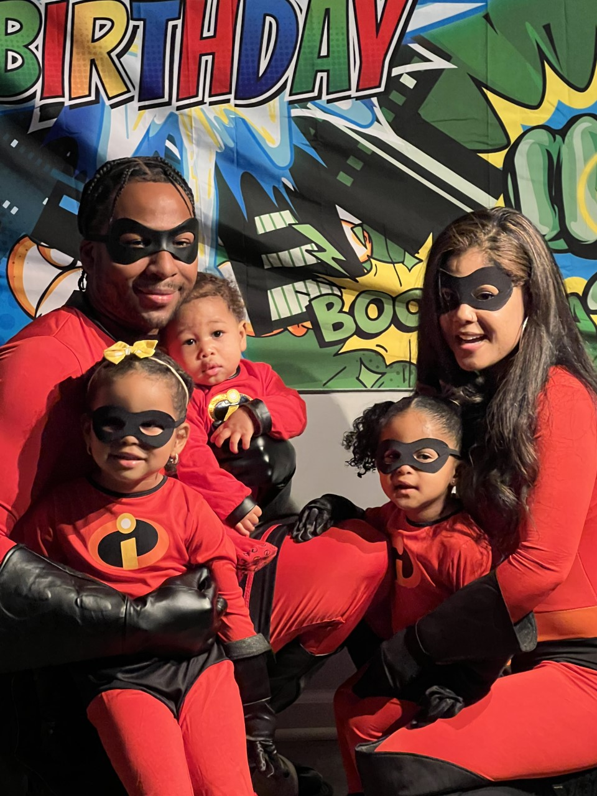

Nine years as a Law Enforcement Officer Training on properly clearing a building
Hello everyone, my name is Keith Williams, and in 2014, I enrolled into the police academy for the city of Camden NJ. I went through a six month training period where I would learn how to move from a civilian mindset, and into the role of a protector. The city of Camden is a very impoverished city, which for now, needs constant assistance from the police department. I have done almost every type of police call I can think of a few times, and yes that includes car chases. I spent most of my career as a detective, and was even assigned to work with the FBI for a wire tap investigation. I really enjoyed my time as a Law Enforcement officer, but now I'm ready for a new career path and excited to learn the basics of being a software engineer.
Family Man
Meet the Williams Family.

Hiro's Birthday Party
Hello all! This is my beautiful family. First up is my lovely fiancee, Desiree. She is always pushing me to reach higher heights and offers tremendous support when times get tough. Up next is my oldest daughter Eden, who is always asking questions that catch me off guard. Next is my second oldest, Arielle. Arielle is a very independent child who is always observing things around her and will not hesistate to scale objects to get what she wants. Usually being a snack shes trying to stealthly get. Lastly, is my son Hiro, who like his father, is a prankster, who loves playing with his family.
What does Keith do in his free time?
Hobbies and pastimes
When I am not chasing law offenders or tending to the children, I usually like to do a couple different things. My first go to, is playing basketball at my local gym. Here I find the mental peace of not thinking about life, and I am able to fully immerse myself into the game. I usually try to play for at least two hours, three times a week, but only if I have that much free time. If I have some free time but the gym is not open, then you can usually find me catching up on anime or learning something random from Youtube. I also spend time with Nikki James and Rahsaan when time allows.
I loved being a police officer, there is so much gratification that comes from truly helping people in need. That was easily the best part. However, there were also parts that made it hard to want to do this for another twenty years. Like for instance, having to come into work on my days off every week, car crashes, fighting with criminals, and also dodging bullets. So, I got to thinking, and I began searching youtube for careers in Information Technologies. This reminded me of how I always wanted to learn coding as a younger man, but was always so distracted with life. I began researching software engineering, and instantly knew this is what I wanted to do. The ability to create databases from the ground up is so captivating to me! I began to think about all the applications this skill set brings to the world and I can not wait to begin this next chapter of my life.